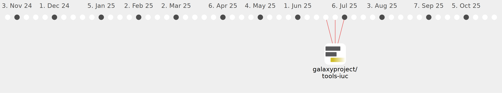

Galaxy Community Activities
NaFoucha
NaFoucha
https://github.com/NaFoucha
Commits all-time:
32
Commits last year:
32

galaxyproject/tools-iuc
(32)
9f621c9
007f9bf
bac727d
e85dbd4
cd9f1b6
2a388f3
6c687a3
5d50d6c
0e6f9da
a1acb0c
c0ede92
ae2b147
8f818ee
30c54d4
7a52e75
5d64fd2
0e2f9f5
271c32a
0b0e2e2
e1efe3b
93f9210
6bdb23e
d164779
10f7b42
1dcd706
2438f7c
3c27099
2f3de84
0a86cc1
73034bf
84bc7f7
05b3196